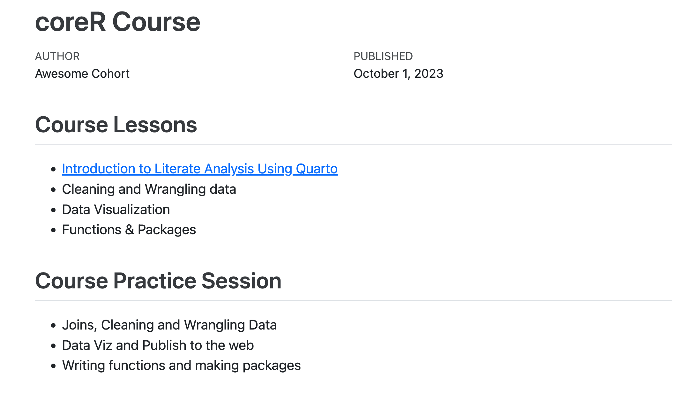

Learning Objectives
- How to use Git, GitHub (+Pages), and Quarto to publish an analysis to the web
11.1 Introduction
Sharing your work with others in engaging ways is an important part of the scientific process.
So far in this course, we’ve introduced a small set of powerful tools for doing open science:
- R and its many packages
- RStudio
- Git
- GitHub
- Quarto
Quarto, in particular, is amazingly powerful for creating scientific reports but, so far, we haven’t tapped its full potential for sharing our work with others.
In this lesson, we’re going to take our training_{USERNAME} GitHub repository and turn it into a beautiful and easy to read web page using the tools listed above.
Make sure you are in
training_{USERNAME}projectAdd a new Quarto file at the top level called
index.qmd- Go to the RStudio menu File -> New File -> Quarto Document
- This will bring up a dialog box. Add the title “GitHub Pages Example”, keep the Default Output Format as “HTML”, and then click “OK”
Save the Quarto Document you just created. Use
index.qmdas the file name- Be sure to use the exact case (lower case “index”) as different operating systems handle case differently and it can interfere with loading your web page later
Press “Render” and observe the rendered output
- Notice the new file in the same directory
index.html - This is our Quarto file rendered as
HTML(a web page)
- Notice the new file in the same directory
Commit your changes (for both
index.qmdandindex.html) with a commit message, andpushto GitHub- If you have a folder called
index_files, commit this as well. This folder contains the all the formatting and display settings for your html page.
- If you have a folder called
Open your web browser to the github.com and navigate to the page for your
training_{USERNAME}repositoryActivate GitHub Pages for the
mainbranch- Go to Settings -> Pages (underneath the Code and Automation section)
- Keep the “Source” as “Deploy from a branch”
- Under “Branch” you’ll see a message that says “GitHub Pages is currently disabled”. To change this, change the branch from “None” to
main. Keep the folder as therootand then click “Save” - You should see the message change to “Your GitHub Pages site is currently being built from the
mainbranch”
Note: index.qmd represents the default file for a web site, and is returned whenever you visit the web site but doesn’t specify an explicit file to be returned.
Now, the rendered website version of your repo will show up at a special URL.
GitHub Pages follows a convention like this:

Note that it changes from github.com to github.io
- Go to
https://{username}.github.io/{repo_name}/(Note the trailing/) - Observe the awesome rendered output
Now that we’ve successfully published a web page from an Quarto Document, let’s make a change to our Quarto Document and follow the steps to publish the change on the web:
- Go back to your
index.qmd - Delete all the content, except the
YAMLfrontmatter - Type “Hello world”
- Render
index.qmd - Use Git workflow:
Stage (add) -> Commit -> Pull -> Push - Go back to
https://{username}.github.io/{repo_name}/
Next, we will show how you can link different qmd’s rendered into html so you can easily share different parts of your work.
In this exercise, you’ll create a table of contents with the lessons of this course on the main page, and link some of the files we have work on so far.
Go back to the RStudio server and to your
index.qmdfileCreate a table of contents with the names of the main technical lessons of this course, like so:
## Course Lessons
- Introduction to Literate Analysis Using Quarto
- Cleaning and Wrangling data
- Data Visualization
- Functions and packages
## Course Practice Session
- Practice I: Cleaning and Wrnagling and Data Viz
- Practice II: Writing functions
Make sure you have the
htmlversions of yourintro-to-qmd.qmdanddata-cleaning.qmdfiles. If you only see theqmdversion, you need to “Render” your files firstIn your
index.qmdlet’s add the links to thehtmlfiles we want to show on our webpage. Do you remember the Markdown syntax to create a link?
Markdown syntax to create a link:
[Text you want to hyperlink](link)- Example:
[Data wrangling and cleaning](data-wrangling-cleaning.html)
- Example:
Render
index.qmdUse Git workflow:
Stage (add) -> Commit -> Pull -> Push
Now when you visit your web site, you’ll see the table of contents, and can navigate to the others file you linked.
Quarto web pages are a great way to share work in progress with your colleagues. Here we showed an example with the materials we have created in this course. However, you can use these same steps to share the different files and progress of a project you’ve been working on. To do so simply requires thinking through your presentation so that it highlights the workflow to be reviewed. You can include multiple pages and build a simple web site and make your work accessible to people who aren’t set up to open your project in R. Your site could look something like this:
